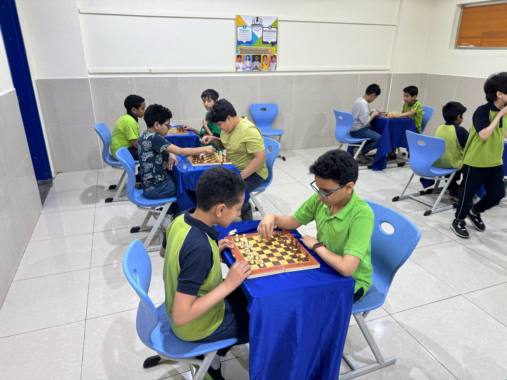
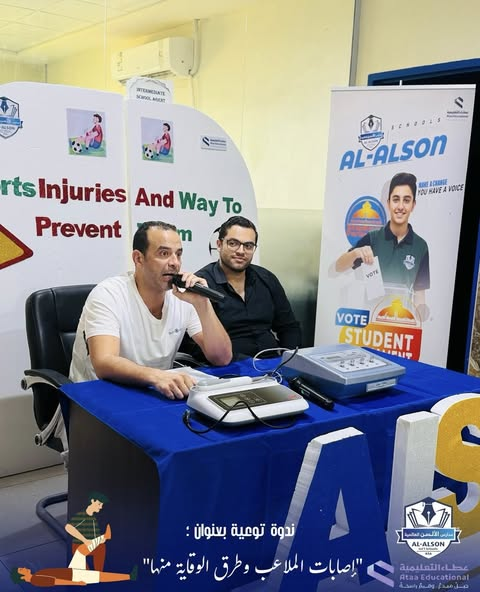
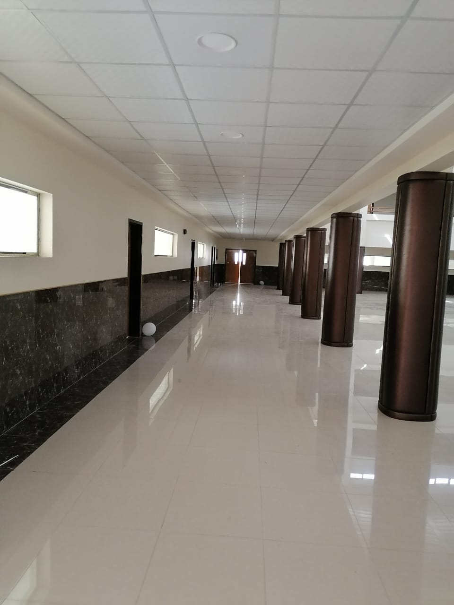

Home/Student Life
School is where the day is lived, not only the timetable.
A sports academy, Qur'an competitions, art rooms, a swimming pool and a counseling team that knows every name — life at Al-Alson extends well beyond lessons, and it is planned with the same care as our teaching.
01 Beyond the classroom
What students do here.
Football & martial arts
Our own sports academy runs football and self-defence programmes alongside school PE — with full gym, playing fields and outdoor courts.
Competitions with tradition
Al-Alson students regularly earn advanced places in Holy Qur'an and Prophetic Sunnah competitions at the Riyadh level.
Dedicated activity rooms
Fine arts and music rooms support classroom enrichment, school celebrations and the annual graduation ceremonies.
A dedicated programme
A special department identifies and nurtures gifted students, with enrichment that goes beyond the standard timetable.
National, religious & world days
Internal and external trips, National Day and religious celebrations, academic competitions and honours ceremonies across the year.
Guidance in every section
The counseling and student-activity department plans the activity calendar, supports life skills and works with families early.
02 A day at Al-Alson
How the day unfolds.
Arrival & greeting
Staff receive students at the gate. Names are known; the day starts personally.
Morning assembly or homeroom
Notices, a short reflection and attendance — the calm start that steadies everything after.
Morning lessons
Core subjects while minds are freshest, taught on smart interactive boards in well-planned blocks.
Break & prayer
Outdoors in the wide courtyards, and the musalla open for Dhuha prayer.
Middle lessons
Sciences in the labs, languages, computing, arts and humanities — breadth by design.
Lunch & activities
Clubs, academy training and rehearsals fill the middle of the day for those who choose them.
Final lessons & Dhuhr prayer
Teaching closes with the midday prayer in the school musalla.
Home — or training
Fixtures and rehearsals continue after hours; the campus empties slowly.
Note Timings shown are an illustrative sample — the school's official daily schedule will be confirmed.
03 Care & wellbeing
Known, supported, safe.
How care is organised
Every student has a homeroom advisor who follows their academic progress and their wellbeing side by side, backed by a dedicated counseling and student-activity department in every section.
- Homeroom advisor for every student
- Counseling & student-activity department in all sections
- Behaviour plans built with parents as partners
- Safe, physically comfortable learning environment
Health & safety in practice
Every building carries a qualified medical clinic supervised by full-time doctors throughout the school day, alongside clear preventive and safety procedures.
- Medical clinic in every building, staffed all day
- Health and safety awareness programmes for students
- Preventive procedures applied across the school
- Prayer facilities and musalla on campus
04 Campus & facilities
20,000 m² built for the whole day.
Classrooms with smart interactive boards
All stagesScience laboratories
Specialist-equippedComputer & language labs
From KGAI & robotics rooms
Dedicated hallsSTEM / STEAM classrooms
Project-based learningLibrary & digital learning resources
Open dailyIndoor & outdoor theatres
Assemblies & performanceSports halls, fields & courts
PE & Sports AcademyTeaching swimming pools
Swimming instructionFine arts & music rooms
Activities & enrichmentMedical clinics & health facilities
Every buildingMusalla & wide courtyards
Prayer & break timesChildren's playgrounds & KG nurseries
Early yearsDining & service facilities
Break & lunch05 Campus gallery
A look around.






06 See it live
Pictures help. A visit helps more.
Book a campus tour and experience the atmosphere of the school on an ordinary day — which is exactly the right way to judge it.